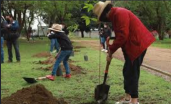
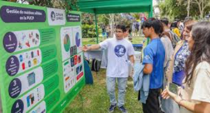
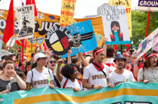
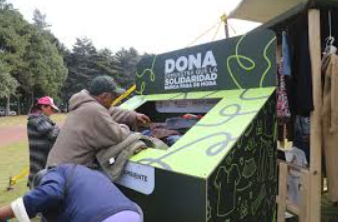

Posibles soluciones ante los ecocidios

Restauración ambiental y reforestación
Una solución importante es restaurar las zonas dañadas. Esto no significa solo plantar árboles, sino recuperar el equilibrio del ecosistema. Para que una reforestación funcione, deben utilizarse especies nativas, cuidar el suelo, proteger el agua y dar seguimiento durante varios años.
También se pueden restaurar ríos, humedales, manglares y áreas erosionadas. La restauración ambiental ayuda a recuperar hábitats, mejorar la calidad del aire, conservar agua y reducir los efectos del cambio climático.

Educación ambiental
La educación ambiental es clave para prevenir ecocidios. Cuando las personas conocen las causas y consecuencias del daño ambiental, pueden tomar mejores decisiones. En las escuelas, comunidades y medios digitales se puede informar sobre el cuidado del agua, separación de residuos, consumo responsable y protección de la biodiversidad.
La educación también ayuda a que las personas identifiquen problemas en su comunidad, como tiraderos clandestinos, tala ilegal o contaminación de ríos, y sepan cómo actuar de manera responsable.

Aplicación de leyes y vigilancia
Las leyes ambientales deben aplicarse de forma clara y justa. No basta con que existan normas; también es necesario que las autoridades vigilen, investiguen y sancionen a quienes dañen el medio ambiente. Las empresas deben cumplir con estudios de impacto ambiental y manejar correctamente sus residuos.
La vigilancia ciudadana también es importante. Las comunidades pueden organizarse para cuidar sus recursos naturales, reportar daños y exigir transparencia cuando se planean proyectos que pueden afectar el territorio.

Consumo responsable y acciones cotidianas
Aunque muchos ecocidios son provocados por grandes actividades industriales o económicas, las acciones diarias también ayudan a reducir el impacto ambiental. Algunas medidas son ahorrar agua, evitar tirar basura, separar residuos, reducir plásticos de un solo uso, reutilizar materiales y consumir productos locales o menos contaminantes.
Estas acciones no solucionan todo por sí solas, pero ayudan a crear una cultura ambiental. Cuando más personas cambian sus hábitos y exigen responsabilidad a empresas y autoridades, se fortalece la defensa del medio ambiente.